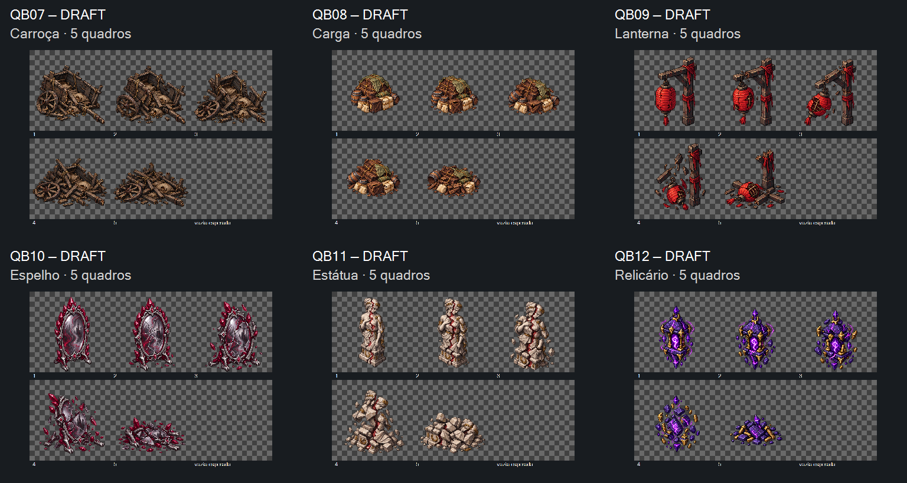

Seis fontes, 30 quadros, aguardando revisão visual conjunta. QB07 v01 carroça, QB08 v02 carga, QB09 v01 lanterna, QB10 v01 espelho, QB11 v01 estátua e QB12 v02 relicário. Prévia de células nativas, sem alinhamento ou normalização final. As seis rupturas executam uma vez e mantêm o último quadro; use Repetir para comparar. Velocidade de inspeção, sem decisão de temporização em jogo.
Manifesto · Medições e hashes · Prompts usados · Entrega para Claude · Checagem do player
Preparação pendente: alfa dos sólidos próximo de 255, resíduos fora do corpo, escala e base variáveis. Margem-alvo de 48 px atingida apenas na carga. Espelho tem margem mínima de 4 px; relicário 9 px. Não há admissão no jogo. Avaliar identidade, sequência da quebra e direção visual por código/revisão.

Notas de direção: a lanterna caída deixa parte do poste em pé; fragmentos do espelho mantêm o reflexo existente; a estátua mantém vermelho nas fissuras dos restos. Conferir essas soluções na revisão conjunta. O relicário perde sustentação e brilho. Nenhum loot ou criatura foi acrescentado.
Próximo checkpoint: aceite do conjunto ou indicação dos códigos a ajustar. Implementação e preparação técnica com Claude. Lógica dos controles verificada offline; render real do navegador e animação no jogo não verificados. Nenhum playtest realizado por esta galeria.